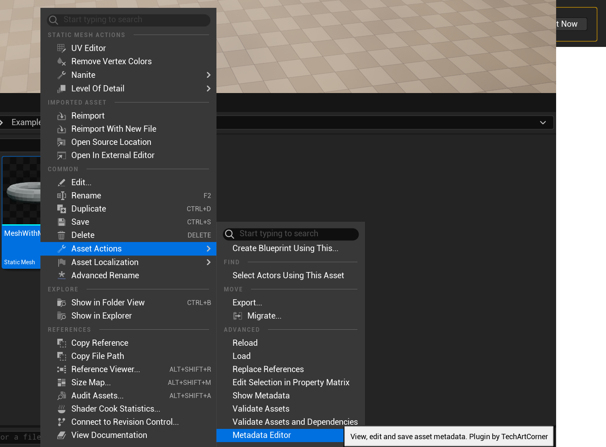
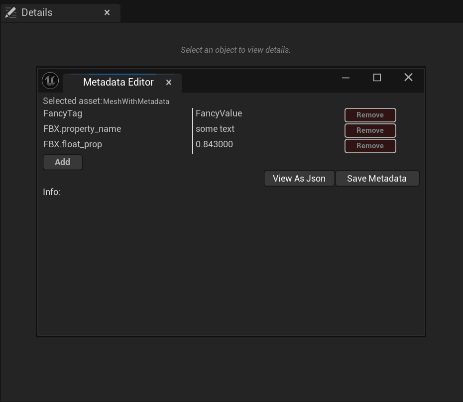
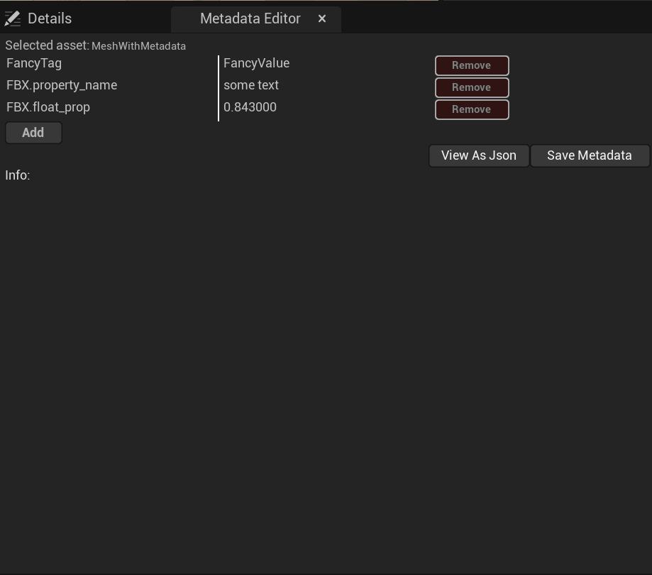
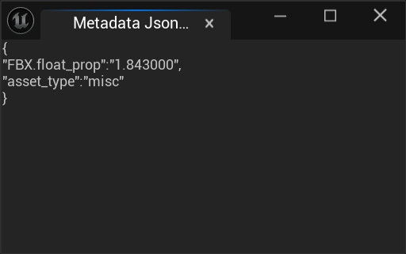
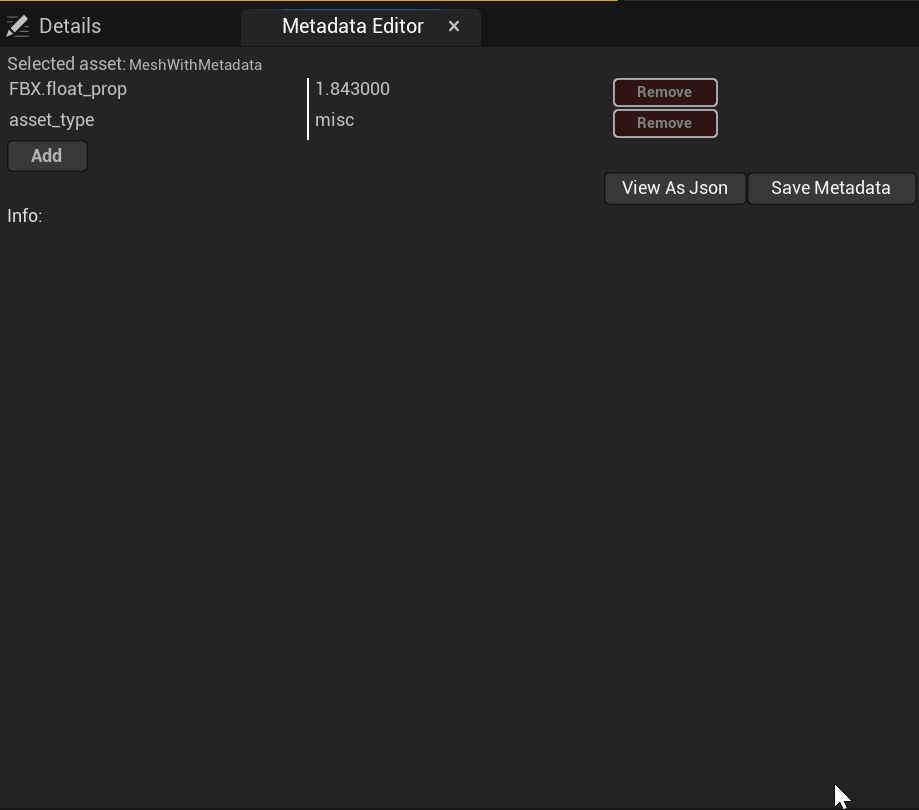

User Guide
Metadata Editor User Guide
It’s main purpose is to make metadata editing simple and thus this guide also will be simple.
Key information
Editor can edit only one asset at a time. If multiple assets were selected, editor will open for the first one. Name of selected asset is always visible in top left side of the editor.
Edit metadata of an asset
- Pick an asset of choice in Content Browser and Right Mouse Button on it.
- Navigate to Asset Actions -> Metadata Editor 
- Metadata Editor can be used in a separate window or docked. Adjust it to your liking. 
- Use Add/Remove buttons to add or remove more metadata tags. Each name and value is editable. 
- View As Json will reveal a json text of whole metadata. This view is not editable but may be useful for those who need a text representation of all metadata tags. JSON value may not be a correct JSON if you use escape characters or double quotation marks in tag names or values. 
- Press Save Metadata to write metadata to asset. 